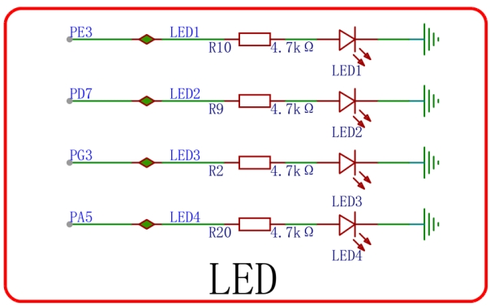
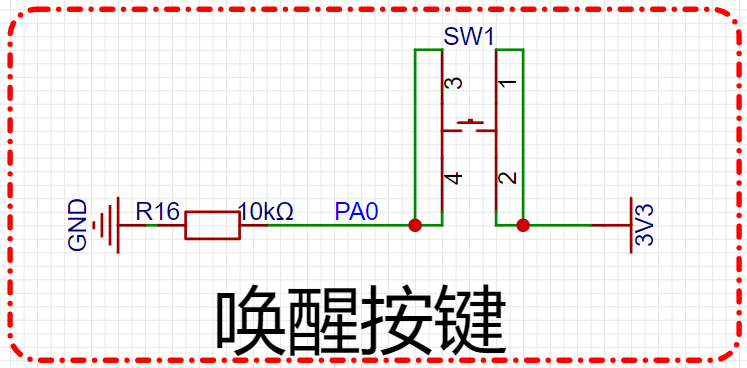

<!DOCTYPE lake>
<h2 data-lake-id="pC4h3" id="pC4h3"><span data-lake-id="ueed56832" id="ueed56832">学习目标</span></h2><ol list="ud8e10a95"><li data-lake-id="u6edd8c18" fid="u39c7b801" id="u6edd8c18"><span data-lake-id="u5121cdbd" id="u5121cdbd">理解任务管理机制</span></li><li data-lake-id="u65b7fee0" fid="u39c7b801" id="u65b7fee0"><span data-lake-id="u212e1951" id="u212e1951">掌握动态任务创建</span></li><li data-lake-id="u31eda460" fid="u39c7b801" id="u31eda460"><span data-lake-id="u3b43482d" id="u3b43482d">掌握任务删除</span></li><li data-lake-id="u0d72bd77" fid="u39c7b801" id="u0d72bd77"><span data-lake-id="u8348a2c2" id="u8348a2c2">掌握任务挂起和恢复</span></li><li data-lake-id="ued56b320" fid="u39c7b801" id="ued56b320"><span data-lake-id="u6fa42696" id="u6fa42696">了解静态任务创建</span></li><li data-lake-id="u1da27da1" fid="u39c7b801" id="u1da27da1"><span data-lake-id="ufeb6fda3" id="ufeb6fda3">了解任务调度机制</span></li><li data-lake-id="u9ff3bffd" fid="u39c7b801" id="u9ff3bffd"><span data-lake-id="ub752cc94" id="ub752cc94">了解临界区的概念</span></li></ol><h2 data-lake-id="CtvfW" id="CtvfW"><span data-lake-id="u0a707f92" id="u0a707f92">学习内容</span></h2><h3 data-lake-id="OSbHo" id="OSbHo"><span data-lake-id="u910b12e8" id="u910b12e8">任务处理常见操作</span></h3><table class="lake-table" data-lake-id="SK8Wr" id="SK8Wr" margin="true" style="width: 500px" width-mode="contain"><colgroup><col width="250"/><col width="250"/></colgroup><tbody><tr data-lake-id="u5818be2c" id="u5818be2c"><td data-lake-id="u9c6be3da" id="u9c6be3da" style="vertical-align: middle"><p data-lake-id="u0bbc9179" id="u0bbc9179" style="text-align: center"><span data-lake-id="u77ca238d" id="u77ca238d">操作</span></p></td><td data-lake-id="ued469487" id="ued469487" style="vertical-align: middle"><p data-lake-id="u6f946f50" id="u6f946f50" style="text-align: center"><span data-lake-id="u7fe4f33b" id="u7fe4f33b">API</span></p></td></tr><tr data-lake-id="ue6d6e996" id="ue6d6e996"><td data-lake-id="ub5156a14" id="ub5156a14" style="vertical-align: middle"><p data-lake-id="u2a97de57" id="u2a97de57" style="text-align: center"><span data-lake-id="ub235ee5d" id="ub235ee5d">动态任务创建</span></p></td><td data-lake-id="u3fb2cf47" id="u3fb2cf47" style="vertical-align: middle"><p data-lake-id="u5eb01d25" id="u5eb01d25" style="text-align: center"><span data-lake-id="uf93cb303" id="uf93cb303">xTaskCreate</span></p></td></tr><tr data-lake-id="ub5a7ef76" id="ub5a7ef76"><td data-lake-id="u34b0c867" id="u34b0c867" style="vertical-align: middle"><p data-lake-id="u6b6f13b6" id="u6b6f13b6" style="text-align: center"><span data-lake-id="uce90cfc1" id="uce90cfc1">任务删除</span></p></td><td data-lake-id="u1277e154" id="u1277e154" style="vertical-align: middle"><p data-lake-id="u22400eda" id="u22400eda" style="text-align: center"><span data-lake-id="ud1737b98" id="ud1737b98">vTaskDelete</span></p></td></tr><tr data-lake-id="u514e0de4" id="u514e0de4"><td data-lake-id="udba69dad" id="udba69dad" style="vertical-align: middle"><p data-lake-id="u5a2f17ae" id="u5a2f17ae" style="text-align: center"><span data-lake-id="u86b6ce0d" id="u86b6ce0d">静态任务创建</span></p></td><td data-lake-id="uc96a3a93" id="uc96a3a93" style="vertical-align: middle"><p data-lake-id="u31a4a0a8" id="u31a4a0a8" style="text-align: center"><span data-lake-id="u237f76e6" id="u237f76e6">vTaskCreateStatic</span></p></td></tr><tr data-lake-id="uc8829dec" id="uc8829dec"><td data-lake-id="u3395b048" id="u3395b048" style="vertical-align: middle"><p data-lake-id="u433a9e15" id="u433a9e15" style="text-align: center"><span data-lake-id="u65ad0002" id="u65ad0002">挂起任务</span></p></td><td data-lake-id="u8b0d97b9" id="u8b0d97b9" style="vertical-align: middle"><p data-lake-id="u77430edd" id="u77430edd" style="text-align: center"><span data-lake-id="u4afa92b0" id="u4afa92b0">vTaskSuspend</span></p></td></tr><tr data-lake-id="uef9fab58" id="uef9fab58"><td data-lake-id="uf8797aa1" id="uf8797aa1" style="vertical-align: middle"><p data-lake-id="u40dd9d49" id="u40dd9d49" style="text-align: center"><span data-lake-id="u6b732fb3" id="u6b732fb3">恢复任务</span></p></td><td data-lake-id="u6cf17375" id="u6cf17375" style="vertical-align: middle"><p data-lake-id="u4a7cee3f" id="u4a7cee3f" style="text-align: center"><span data-lake-id="u52440cde" id="u52440cde">vTaskResume</span></p></td></tr></tbody></table><h3 data-lake-id="piruw" id="piruw"><span data-lake-id="ud5751e1d" id="ud5751e1d">任务组成</span></h3><p data-lake-id="u224f2804" id="u224f2804"><span data-lake-id="u0bbfaa05" id="u0bbfaa05">此处以创建任务的代码为例，搞清楚几个关键词。</span></p><span class="yuque-card-unsupported">[codeblock]</span><p data-lake-id="u95b08b4b" id="u95b08b4b"><span data-lake-id="uf247911b" id="uf247911b">创建任务的参数说明：</span></p><ol list="u33e68b80"><li data-lake-id="u6ffb7735" fid="ua2f0828e" id="u6ffb7735"><code data-lake-id="u57c7b3c3" id="u57c7b3c3"><span data-lake-id="u17b5511f" id="u17b5511f">TaskFunction_t pxTaskCode</span></code><span data-lake-id="u5c640959" id="u5c640959">: 表示的这个任务执行的函数，函数格式为:</span></li></ol><span class="yuque-card-unsupported">[codeblock]</span><ol list="u0668946c" start="2"><li data-lake-id="u50f6ecf4" fid="u0c43a853" id="u50f6ecf4"><code data-lake-id="ud3dee380" id="ud3dee380"><span data-lake-id="ub9b59b27" id="ub9b59b27">void * const pvParameters</span></code><span data-lake-id="u3cf6a87f" id="u3cf6a87f">: 表示任务执行函数的参数，也就是上面函数中的参数部分。</span></li><li data-lake-id="uedc646b4" fid="u0c43a853" id="uedc646b4"><code data-lake-id="u63880f37" id="u63880f37"><span data-lake-id="u951e6572" id="u951e6572">const char * const pcName</span></code><span data-lake-id="u733991ca" id="u733991ca">: 表示给这个任务起的名字。</span></li><li data-lake-id="u36a21d33" fid="u0c43a853" id="u36a21d33"><code data-lake-id="uada61d22" id="uada61d22"><span data-lake-id="ua08e6a56" id="ua08e6a56">const configSTACK_DEPTH_TYPE usStackDepth</span></code><span data-lake-id="u6107d4e3" id="u6107d4e3">: 表示启动任务所需要的栈的大小，单位是byte。通常根据任务的复杂度来进行设置。</span></li><li data-lake-id="u80a7e656" fid="u0c43a853" id="u80a7e656"><code data-lake-id="u67ffb1d8" id="u67ffb1d8"><span data-lake-id="ueb59381c" id="ueb59381c">UBaseType_t uxPriority</span></code><span data-lake-id="u38882fc7" id="u38882fc7">: 表示任务的优先级。</span></li></ol><blockquote data-lake-id="ue1a3d065" id="ue1a3d065" style="padding-left: 2em"><p data-lake-id="ub60448e0" id="ub60448e0"><span data-lake-id="uf982dd11" id="uf982dd11">以下是关于FreeRTOS任务优先级的几个要点：</span></p><ol list="ub9174010"><li data-lake-id="u1af6d98c" fid="u5255a6ce" id="u1af6d98c"><span data-lake-id="uaff8e75d" id="uaff8e75d">数值越大，优先级越高：在FreeRTOS中，任务的优先级数值越大，优先级越高。例如，优先级为1的任务比优先级为0的任务具有更高的优先级。</span></li><li data-lake-id="u4a2cee5d" fid="u5255a6ce" id="u4a2cee5d"><span data-lake-id="u5c8a8b99" id="u5c8a8b99">优先级为0的任务是最低优先级：通常称为IDLE任务或空闲任务。该任务在没有其他任务需要运行时执行，确保系统在空闲时也有任务可以运行。</span></li><li data-lake-id="uaa778c4b" fid="u5255a6ce" id="uaa778c4b"><span data-lake-id="ud8ad4215" id="ud8ad4215">相同优先级的任务采用时间片轮转调度：当有多个任务具有相同优先级时，FreeRTOS会使用时间片轮转调度算法来平均分配CPU时间。每个任务在一轮时间片内执行一段时间，然后切换到下一个任务。</span></li><li data-lake-id="ud4ea1461" fid="u5255a6ce" id="ud4ea1461"><span data-lake-id="ua4d9ee46" id="ua4d9ee46">高优先级任务可以抢占低优先级任务：如果一个高优先级任务就绪并准备好运行，它可以抢占当前正在运行的低优先级任务，从而提供更好的实时性。</span></li><li data-lake-id="u6b380857" fid="u5255a6ce" id="u6b380857"><span data-lake-id="uedcc8d7a" id="uedcc8d7a">优先级反映任务调度顺序：任务的优先级决定了任务调度的顺序。当有多个任务就绪并等待运行时，任务调度器会选择具有最高优先级的就绪任务来执行。</span></li></ol><p data-lake-id="u7e974ee9" id="u7e974ee9"><span data-lake-id="u5706c34f" id="u5706c34f">需要注意的是，任务优先级的设置应根据应用的实时需求和任务间的相对重要性进行合理的规划。过多或过少的优先级级别可能导致调度问题或资源竞争。在任务优先级设置时，需要综合考虑系统的响应性、任务的相互影响和资源的使用情况等因素。</span></p></blockquote><ol list="ud3bbec47" start="6"><li data-lake-id="u16b48d60" fid="u9985e441" id="u16b48d60"><code data-lake-id="u20a3eb02" id="u20a3eb02"><span data-lake-id="u5ec378f1" id="u5ec378f1">TaskHandle_t * const pxCreatedTask</span></code><span data-lake-id="u9078a47d" id="u9078a47d">: 任务句柄。可以理解为任务的实例。</span></li></ol><p data-lake-id="u5428c31c" id="u5428c31c"><span data-lake-id="ue909835e" id="ue909835e">创建任务的返回值说明:</span></p><p data-lake-id="ue2d2c35b" id="ue2d2c35b"><code data-lake-id="u5e35cfac" id="u5e35cfac"><span data-lake-id="uaaf9b5a4" id="uaaf9b5a4">BaseType_t</span></code><span data-lake-id="u9855ca5d" id="u9855ca5d">类型为创建任务的返回值，结果为</span><code data-lake-id="u76ab6169" id="u76ab6169"><span data-lake-id="ubcf59dcd" id="ubcf59dcd">pdPASS</span></code><span data-lake-id="u1cdd0658" id="u1cdd0658">或者</span><code data-lake-id="u22984658" id="u22984658"><span data-lake-id="u40cff34c" id="u40cff34c">pdFAIL</span></code><span data-lake-id="ua1bb43e1" id="ua1bb43e1">（成功或者失败）。</span></p><h3 data-lake-id="C2TeK" id="C2TeK"><span data-lake-id="udbc7f7a0" id="udbc7f7a0">动态任务创建流程</span></h3><ol list="u6d73dba6"><li data-lake-id="uce43044b" fid="u1eb70b2f" id="uce43044b"><span data-lake-id="u603ed08f" id="u603ed08f">此步骤可以省略。因为默认值为1。但是需要了解这个配置。配置</span><code data-lake-id="u46a0f3ec" id="u46a0f3ec"><span data-lake-id="u07107dab" id="u07107dab">FreeRTOS.h</span></code><span data-lake-id="u1eada64b" id="u1eada64b">中的</span><code data-lake-id="u6be6c764" id="u6be6c764"><span data-lake-id="u9ad0f1d5" id="u9ad0f1d5">configSUPPORT_DYNAMIC_ALLOCATION</span></code><span data-lake-id="u31152475" id="u31152475">为1.</span></li></ol><span class="yuque-card-unsupported">[codeblock]</span><ol list="u4d1f9f23" start="2"><li data-lake-id="ud2b26344" fid="u2f1c3b2f" id="ud2b26344"><span data-lake-id="ufcabe972" id="ufcabe972">定义任务执行函数。</span></li></ol><span class="yuque-card-unsupported">[codeblock]</span><ol list="ua81888b0" start="3"><li data-lake-id="u3853856a" fid="u413f6eda" id="u3853856a"><span data-lake-id="u5363007a" id="u5363007a">调用任务创建逻辑</span></li></ol><span class="yuque-card-unsupported">[codeblock]</span><p data-lake-id="ubfe0558b" id="ubfe0558b"><span data-lake-id="uaa7e9a39" id="uaa7e9a39">我们编写一个HelloWorld示例，点亮PE3和PD7的灯，通过两个不同的任务，进行灯的闪烁控制，观察效果。</span></p><p data-lake-id="uae3289a1" id="uae3289a1"></p><span class="yuque-card-unsupported">[codeblock]</span><h3 data-lake-id="MMIeV" id="MMIeV"><span data-lake-id="ua57d9756" id="ua57d9756">静态任务创建流程</span></h3><ol list="ub96e9b5a"><li data-lake-id="u978dc292" fid="u1eb70b2f" id="u978dc292"><span data-lake-id="u53af5944" id="u53af5944">配置</span><code data-lake-id="u62205629" id="u62205629"><span data-lake-id="uf521b8c0" id="uf521b8c0">FreeRTOS.h</span></code><span data-lake-id="ue106b623" id="ue106b623">中的</span><code data-lake-id="u2c1c9487" id="u2c1c9487"><span data-lake-id="ud1bd7262" id="ud1bd7262">configSUPPORT_STATIC_ALLOCATION</span></code><span data-lake-id="u7f7ee45a" id="u7f7ee45a">为1.</span></li></ol><span class="yuque-card-unsupported">[codeblock]</span><ol list="ub96e9b5a" start="2"><li data-lake-id="u28180aa9" fid="u1eb70b2f" id="u28180aa9"><span data-lake-id="uefa94dde" id="uefa94dde">实现内存管理函数</span><code data-lake-id="uc4f9d9ae" id="uc4f9d9ae"><span data-lake-id="uf4ec44c6" id="uf4ec44c6">vApplicationGetIdleTaskMemory</span></code><span data-lake-id="u462f2d20" id="u462f2d20">和</span><code data-lake-id="ud3c15c4e" id="ud3c15c4e"><span data-lake-id="u34579d3f" id="u34579d3f">vApplicationGetTimerTaskMemory</span></code></li></ol><span class="yuque-card-unsupported">[codeblock]</span><ol list="ub96e9b5a" start="3"><li data-lake-id="u7abb0ba0" fid="u1eb70b2f" id="u7abb0ba0"><span data-lake-id="u89e9d761" id="u89e9d761">定义任务执行函数。</span></li></ol><span class="yuque-card-unsupported">[codeblock]</span><ol list="uacde99a0" start="3"><li data-lake-id="u11d515ea" fid="u413f6eda" id="u11d515ea"><span data-lake-id="u5b23c431" id="u5b23c431">调用任务创建逻辑</span></li></ol><span class="yuque-card-unsupported">[codeblock]</span><ol data-lake-indent="1" list="u2b05198c"><li data-lake-id="uc60c99eb" fid="ua219b6a2" id="uc60c99eb"><code data-lake-id="ue1245b79" id="ue1245b79"><span data-lake-id="uea376d11" id="uea376d11">StackType_t * const puxStackBuffer</span></code><span data-lake-id="u848a1d9c" id="u848a1d9c">:任务栈大小。得自己指定，不可更改。</span></li><li data-lake-id="u3bba4ec7" fid="ua219b6a2" id="u3bba4ec7"><code data-lake-id="u361d4ba6" id="u361d4ba6"><span data-lake-id="ue44ad967" id="ue44ad967">StaticTask_t * const pxTaskBuffer</span></code><span data-lake-id="u0e50d740" id="u0e50d740">:任务控制块，用来存储任务的堆栈空间，任务的状态和优先级等。</span></li><li data-lake-id="u0dc3c4b9" fid="ua219b6a2" id="u0dc3c4b9"><span data-lake-id="ubecfb401" id="ubecfb401">返回值为任务的句柄。</span></li></ol><p data-lake-id="ua445669a" id="ua445669a"><span data-lake-id="u969ae44a" id="u969ae44a">以上面点灯案例为例：</span></p><span class="yuque-card-unsupported">[codeblock]</span><h3 data-lake-id="lTFt0" id="lTFt0"><span data-lake-id="u4d855d9f" id="u4d855d9f">动态任务和静态任务的区别</span></h3><p data-lake-id="u2412ef3a" id="u2412ef3a"><span data-lake-id="u4dec1965" id="u4dec1965">在FreeRTOS中，任务可以使用静态分配方式或动态分配方式创建。这两种方式在任务创建和内存管理方面存在一些区别。</span></p><p data-lake-id="ub1ef3d7f" id="ub1ef3d7f"><span data-lake-id="u74e758ca" id="u74e758ca">静态任务：</span></p><ol list="u7f299a72"><li data-lake-id="u92d37725" fid="uf7362ee0" id="u92d37725"><span data-lake-id="ue5c09a1b" id="ue5c09a1b">静态任务是在编译时分配内存的任务。</span></li><li data-lake-id="u1b6aa8c9" fid="uf7362ee0" id="u1b6aa8c9"><span data-lake-id="u16209eee" id="u16209eee">在创建静态任务时，需要提前为任务分配足够的内存空间。</span></li><li data-lake-id="u469e6284" fid="uf7362ee0" id="u469e6284"><span data-lake-id="u25344b34" id="u25344b34">静态任务的内存分配是固定的，任务的内存大小在编译时确定，并在运行时保持不变。</span></li><li data-lake-id="u18950632" fid="uf7362ee0" id="u18950632"><span data-lake-id="u29da91f4" id="u29da91f4">静态任务使用 xTaskCreateStatic() 函数创建。</span></li></ol><p data-lake-id="ud3d5ccb4" id="ud3d5ccb4"><span data-lake-id="u6b922a8c" id="u6b922a8c">动态任务：</span></p><ol list="u5263cdac"><li data-lake-id="u5f97218a" fid="u54f15f5b" id="u5f97218a"><span data-lake-id="ue69b9c2f" id="ue69b9c2f">动态任务是在运行时分配内存的任务。</span></li><li data-lake-id="ue778604a" fid="u54f15f5b" id="ue778604a"><span data-lake-id="u7069e282" id="u7069e282">在创建动态任务时，不需要提前为任务分配内存空间，而是在运行时使用动态内存分配函数进行分配。</span></li><li data-lake-id="u5ad5356f" fid="u54f15f5b" id="u5ad5356f"><span data-lake-id="u4023ad17" id="u4023ad17">动态任务的内存分配是动态的，任务的内存大小可以根据需要进行调整。</span></li><li data-lake-id="u2a1277e6" fid="u54f15f5b" id="u2a1277e6"><span data-lake-id="uff9d6aee" id="uff9d6aee">动态任务使用 xTaskCreate() 函数创建。</span></li></ol><p data-lake-id="u7d374dad" id="u7d374dad"><span data-lake-id="ueee67bd0" id="ueee67bd0">区别：</span></p><ol list="ufc837d3a"><li data-lake-id="u7e12b32c" fid="u7d188cc1" id="u7e12b32c"><span data-lake-id="u0b48d920" id="u0b48d920">静态任务的内存分配是在编译时完成，而动态任务的内存分配是在运行时完成。</span></li><li data-lake-id="uc010b2a1" fid="u7d188cc1" id="uc010b2a1"><span data-lake-id="u669a5014" id="u669a5014">静态任务需要手动为任务分配内存空间，而动态任务会自动进行内存分配和释放。</span></li><li data-lake-id="u498ca5e8" fid="u7d188cc1" id="u498ca5e8"><span data-lake-id="u192aade5" id="u192aade5">静态任务的内存大小在编译时确定，不能在运行时改变；而动态任务的内存大小可以在运行时进行动态调整。</span></li><li data-lake-id="u006760d2" fid="u7d188cc1" id="u006760d2"><span data-lake-id="u46d73931" id="u46d73931">静态任务对内存的使用是固定的，不会有内存碎片的问题；而动态任务的内存使用可能存在碎片化的风险。</span></li></ol><p data-lake-id="u852c57ba" id="u852c57ba"><span data-lake-id="ufa81430f" id="ufa81430f">选择静态任务还是动态任务取决于具体的应用需求和系统约束。</span></p><p data-lake-id="u4317fbb4" id="u4317fbb4"><span data-lake-id="ub6d65340" id="ub6d65340">静态任务在一些资源有限的系统中更常用，可以避免动态内存分配的开销和内存碎片问题。</span></p><p data-lake-id="ube0b6448" id="ube0b6448"><span data-lake-id="u69bd2c87" id="u69bd2c87">而动态任务可以在运行时根据需要动态分配内存，灵活性更高。</span></p><p data-lake-id="ufb996a4b" id="ufb996a4b"><span data-lake-id="ufd7bd636" id="ufd7bd636">通常采用动态任务创建更多。</span></p><h3 data-lake-id="RXRhU" id="RXRhU"><span data-lake-id="ue6ba3f40" id="ue6ba3f40">任务优先级</span></h3><p data-lake-id="u28d3f319" id="u28d3f319"><span data-lake-id="u162d83b9" id="u162d83b9">任务的优先级等级是在</span><code data-lake-id="uf2b0c90f" id="uf2b0c90f"><span data-lake-id="u1bac9e85" id="u1bac9e85">FreeRTOSConfig.h</span></code><span data-lake-id="ub2abd0d1" id="ub2abd0d1">中定义的，</span><code data-lake-id="uc0a9ad70" id="uc0a9ad70"><span data-lake-id="u9dd06936" id="u9dd06936">configMAX_PRIORITIES</span></code><span data-lake-id="u5db6e6a1" id="u5db6e6a1">定义了最大任务优先级值，默认值为5。那么优先级取值为0到4。数值越大优先级越高。</span></p><p data-lake-id="u3ef1c9a1" id="u3ef1c9a1"><span data-lake-id="u46c71991" id="u46c71991">我们采用日志打印的方式进行验证，开启两个任务，分别打印日志，开启任务时设置不同优先级进行测试，以下是示例代码。</span></p><span class="yuque-card-unsupported">[codeblock]</span><h3 data-lake-id="kjUzx" id="kjUzx"><span data-lake-id="uc8272091" id="uc8272091">任务操作</span></h3><h4 data-lake-id="f9yyu" id="f9yyu"><span data-lake-id="u66ee2cb8" id="u66ee2cb8">任务删除</span></h4><p data-lake-id="u883be735" id="u883be735"><span data-lake-id="uade7d26a" id="uade7d26a">函数格式定义如下</span></p><span class="yuque-card-unsupported">[codeblock]</span><p data-lake-id="uf3017d20" id="uf3017d20"><span data-lake-id="u66a02d97" id="u66a02d97">其中，xTaskToDelete 是要删除的任务的句柄（TaskHandle_t 类型）。可以将任务的句柄传递给 xTaskDelete() 函数，以删除指定的任务。</span></p><p data-lake-id="u79dbc1a7" id="u79dbc1a7"><span data-lake-id="u5a30dc2d" id="u5a30dc2d">任务删除的几个要点如下：</span></p><ol list="ubea41437"><li data-lake-id="u410c4d13" fid="u942fad37" id="u410c4d13"><span data-lake-id="u67f3160b" id="u67f3160b">当前任务的删除：如果在任务的执行过程中调用 xTaskDelete(NULL)，表示删除当前任务。当前任务将被立即删除，并且不会继续执行后续代码</span></li><li data-lake-id="u751e01fc" fid="u942fad37" id="u751e01fc"><span data-lake-id="u97d3da37" id="u97d3da37">删除其他任务：如果要删除除当前任务之外的任务，需要传递相应任务的句柄给 xTaskDelete() 函数。这样，指定的任务将被删除。</span></li><li data-lake-id="ud4491002" fid="u942fad37" id="ud4491002"><span data-lake-id="u3ada5eab" id="u3ada5eab">任务删除的影响：任务删除后，其占用的资源（如堆栈、任务控制块等）会被释放，其他任务可以继续执行。删除任务时需要注意任务间的同步和资源释放，以避免产生悬空指针或资源泄漏等问题。</span></li><li data-lake-id="uc7d3e3a0" fid="u942fad37" id="uc7d3e3a0"><span data-lake-id="u21000f1f" id="u21000f1f">返回值：xTaskDelete() 函数的返回值是 BaseType_t 类型，表示任务删除成功与否。如果任务删除成功，返回值为 pdPASS。如果任务删除失败，返回值为 errTASK_NOT_DELETED。</span></li><li data-lake-id="ub27ee437" fid="u942fad37" id="ub27ee437"><span data-lake-id="ud8c6c22c" id="ud8c6c22c">需要确保配置了如下宏：</span><code data-lake-id="uf1a06306" id="uf1a06306"><span data-lake-id="uf42f528a" id="uf42f528a">#define INCLUDE_vTaskDelete 	1</span></code></li></ol><p data-lake-id="uc3013afd" id="uc3013afd"><span data-lake-id="ucd9e5041" id="ucd9e5041">需要注意的是，在任务删除之前，需要确保不再需要该任务的执行，并且合理处理任务间的同步和资源释放。不正确地删除任务可能会导致未定义行为和系统不稳定性。</span></p><h4 data-lake-id="FkQB4" id="FkQB4"><span data-lake-id="udf085a0b" id="udf085a0b">任务挂起</span></h4><span class="yuque-card-unsupported">[codeblock]</span><h4 data-lake-id="dOYRa" id="dOYRa"><span data-lake-id="uff7cbcdb" id="uff7cbcdb">任务恢复</span></h4><span class="yuque-card-unsupported">[codeblock]</span><p data-lake-id="ud4978fad" id="ud4978fad"><span data-lake-id="u058a6a4d" id="u058a6a4d">实现案例，通过按键来操作任务的操作，点击按钮挂起任务，恢复任务。</span></p><p data-lake-id="u7e247778" id="u7e247778"></p><span class="yuque-card-unsupported">[codeblock]</span><h3 data-lake-id="GWFcO" id="GWFcO"><br/></h3><h2 data-lake-id="MJvBE" id="MJvBE"><span data-lake-id="u0ee7f466" id="u0ee7f466">练习题</span></h2><ol list="u5fbfde64"><li data-lake-id="uf60dd31a" fid="ud9c002a4" id="uf60dd31a"><span data-lake-id="ub7ef773b" id="ub7ef773b">实现多任务打印</span></li><li data-lake-id="u54556741" fid="ud9c002a4" id="u54556741"><span data-lake-id="u6f26e992" id="u6f26e992">实现任务挂起和唤醒</span></li></ol><p data-lake-id="u2021d161" id="u2021d161"><br/></p>